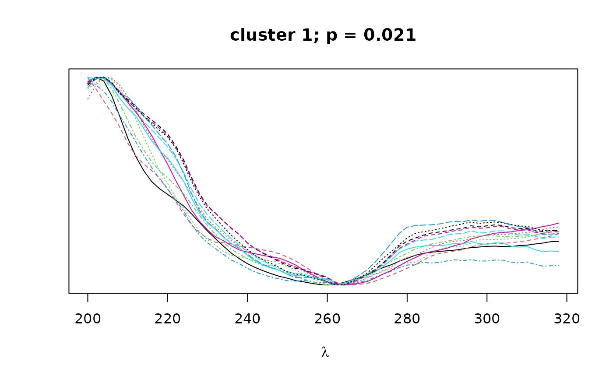
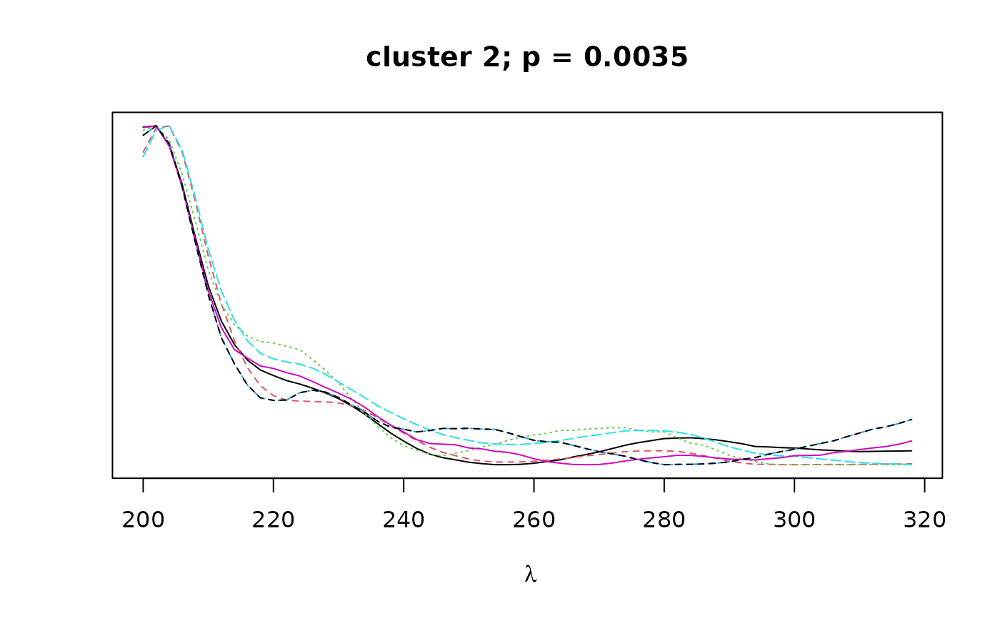
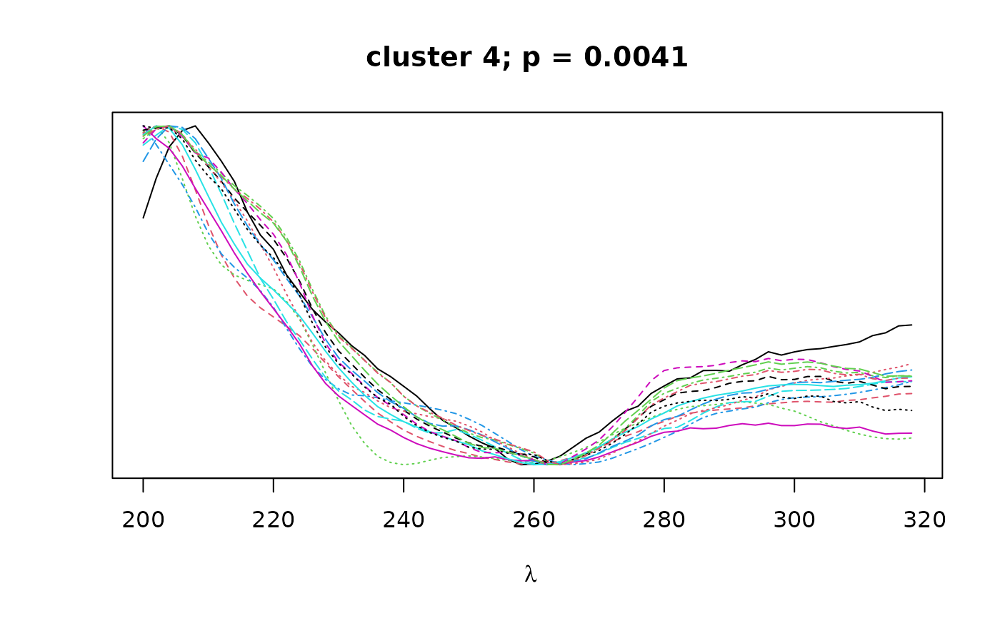
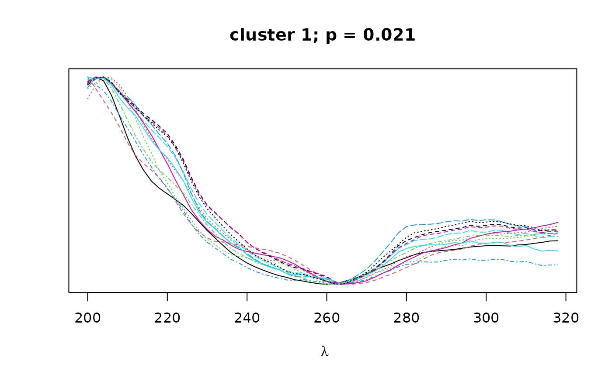
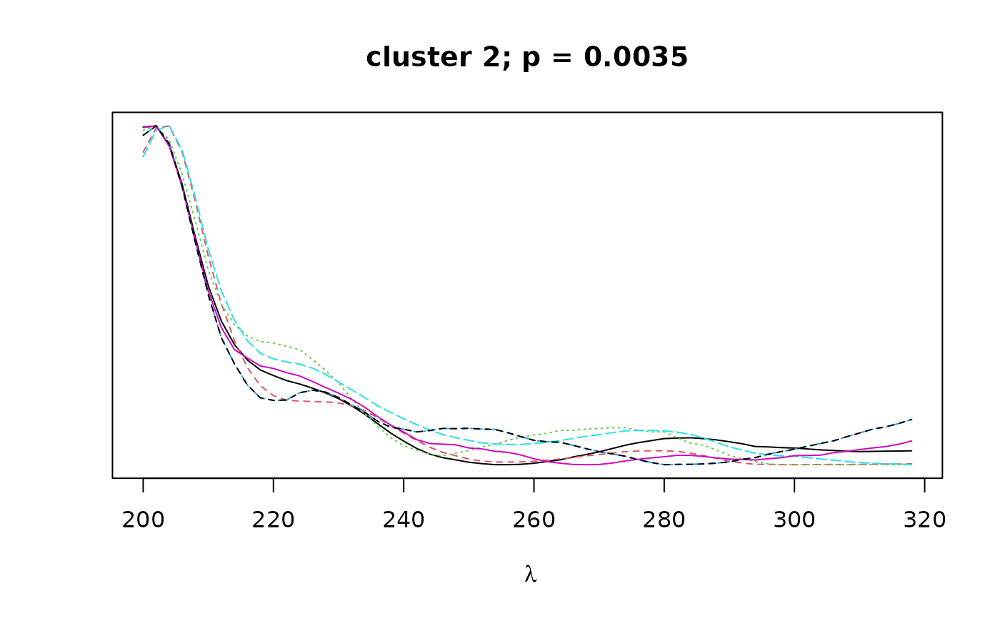
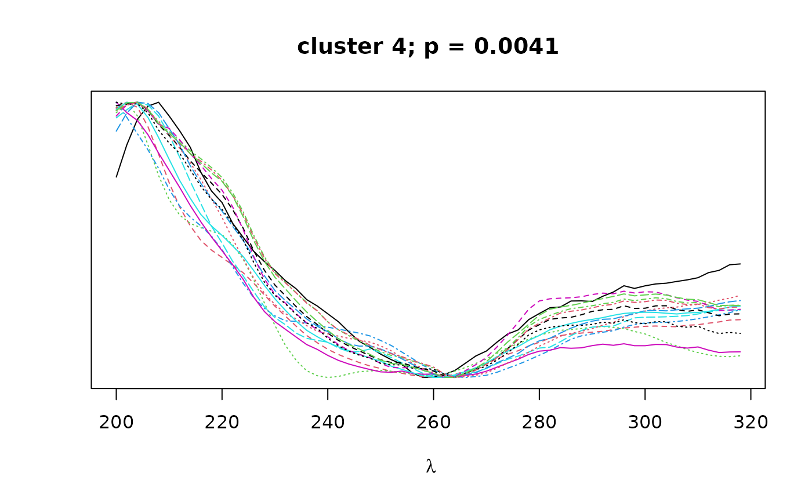
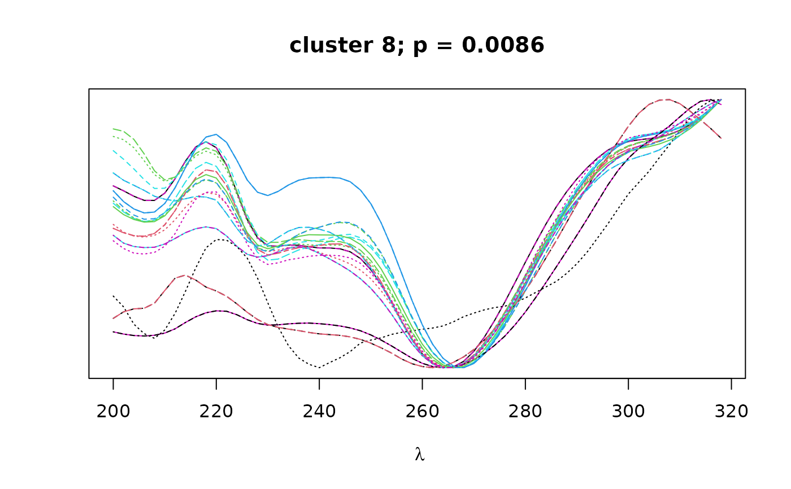
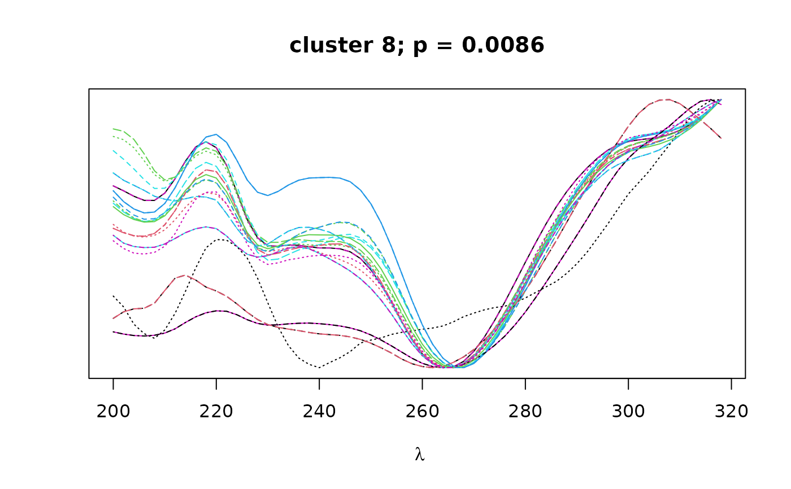

Function to cluster peaks by spectral similarity. A representative spectrum is selected for each peak in the provided peak table and used to construct a distance matrix based on spectral similarity (pearson correlation) between peaks. Hierarchical clustering with bootstrap resampling is performed on the resulting correlation matrix to classify peaks into by their spectral similarity.
Arguments
- peak_table
Peak table from
get_peaktable.- chrom_list
A list of chromatograms in matrix form (timepoints x wavelengths).
- peak_no
Minimum and maximum thresholds for the number of peaks a cluster may have.
- alpha
Confidence threshold for inclusion of cluster.
- nboot
Number of bootstrap replicates for
pvclust.- plot_dend
Logical. If TRUE, plots dendrogram with bootstrap values.
- plot_spectra
Logical. If TRUE, plots overlapping spectra for each cluster.
- verbose
Logical. If TRUE, prints progress report to console.
- save
Logical. If TRUE, saves pvclust object to current directory.
- parallel
Logical. If TRUE, use parallel processing for
pvclust.- max.only
Logical. If TRUE, returns only highest level for nested dendrograms.
- output
What to return. Either
clustersto return list of clusters,pvclustto return pvclust object, orbothto return both items.- ...
Additional arguments to
pvclust.
Value
Returns clusters and/or pvclust object according to the value
of the output argument.
If
output = clusters, returns a list of S4clusterobjects.If
output = pvclust, returns apvclustobject.If
output = both, returns a nested list containing[[1]]thepvclustobject, and[[2]]the list of S4clusterobjects.
The cluster objects consist of the following components:
peaks: a character vector containing the names of all peaks contained in the given cluster.pval: a numeric vector of length 1 containing the bootstrap p-value (au) for the given cluster.
Details
A representative spectrum is selected for each peak in the provided peak table
and used to construct a distance matrix based on spectral similarity
(pearson correlation) between peaks. It is suggested to attach representative
spectra to the peak_table using attach_ref_spectra.
Otherwise, representative spectra are obtained from the chromatogram with the
highest absorbance at lambda max.
Hierarchical clustering with bootstrap
resampling is performed on the resulting correlation matrix, as implemented in
pvclust. Finally, bootstrap values can be used
to select clusters that exceed a certain confidence threshold as defined by
alpha. Clusters can also be filtered by the minimum and maximum
size of the cluster using the argument peak_no. If max_only
is TRUE, only the largest cluster in a nested dendrogram of clusters meeting
the confidence threshold will be returned.
Note
Users should be aware that the clustering algorithm will often return nested clusters. Thus, an individual peak could appear in more than one cluster.
It is highly suggested to use more than 100 bootstraps if you run the clustering algorithm on real data even though we use
nboot = 100in the example to reduce runtime. The authors ofpvclustsuggestnboot = 10000.
References
R. Suzuki & H. Shimodaira. 2006. Pvclust: an R package for assessing the uncertainty in hierarchical clustering. Bioinformatics, 22(12):1540-1542. doi:10.1093/bioinformatics/btl117 .
Examples
# \donttest{
data(pk_tab)
data(Sa_warp)
cl <- cluster_spectra(pk_tab, nboot=100, max.only = FALSE, save = FALSE, alpha = .97)
#> [1] "...collecting representative spectra"
#> [1] "...clustering spectra"
#> Creating a temporary cluster...done:
#> socket cluster with 1 nodes on host ‘localhost’
#> Warning: Cluster size is too small (or NULL). non-parallel version is executed
#> Bootstrap (r = 0.5)... Done.
#> Bootstrap (r = 0.6)... Done.
#> Bootstrap (r = 0.7)... Done.
#> Bootstrap (r = 0.8)... Done.
#> Bootstrap (r = 0.9)... Done.
#> Bootstrap (r = 1.0)... Done.
#> Bootstrap (r = 1.1)... Done.
#> Bootstrap (r = 1.2)... Done.
#> Bootstrap (r = 1.3)... Done.
#> Bootstrap (r = 1.4)... Done.
 #> [1] "...plotting clustered spectra"



#> [1] "...plotting clustered spectra"





 
# }

# }